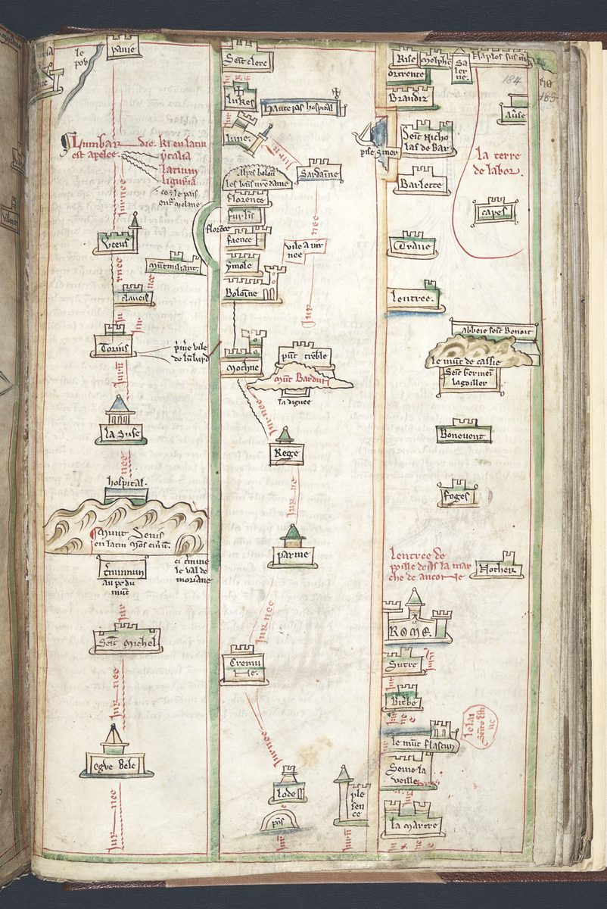

- База знаний
- Практики
- Основные практики
- Маршрут от 5 лет до сегодня
Практика·40 минут·и так, и так·основная
Маршрут от 5 лет до сегодня
Пять лет одной фразой, вехи на год-два, квартал, неделя и шаг на завтра. Большая цель без шагов у меня остаётся мечтой, шаги без цели превращаются в суету, и маршрут связывает одно с другим.
На чём стоитГоризонты фокуса (GTD)опыт практиковВзгляд из будущегоопыт практиковВзгляд из будущего: студенты, лабораторные задачиметки проверены 26.10.2026Почему так
Горизонты фокуса (GTD) опыт практиков опыт практиков
Есть только теоретическая статья о том, почему метод согласуется с когнитивной наукой; проверок самого метода нет.
Взгляд из будущего опыт практиков опыт практиков
Для личных решений и переходов взгляд из будущего не исследовали. Исходная работа 1989 года — одна статья, где такой приём сам по себе мало что менял.
Mitchell и соавт., 1989 · на ком проверяли: студенты, лабораторные задачи
Метка говорит, насколько исследован метод, а не как он сработает у тебя. Что значат метки

- На руках
- Маршрут и первый шаг в календаре.
- Откуда
- полную версию делаем на встрече.
- Это упражнение
- моя адаптация.
- В «Переходе»
- это неделя 10: полную версию делаем на встрече, вместе с деньгами и сроками смены дела.
- 5 лет: направление одной фразой.
- 1–2 года: три вехи — что должно случиться по дороге.
- Квартал: что должно случиться и в каком состоянии хочется прийти к его концу.
- Неделя: три шага.
- Сегодня: один шаг — и сразу в календарь.
Если не получается начать. Поставь в календарь один шаг на завтра, хоть на пятнадцать минут.
Работа в образовании, где хватает времени на семью.
Переподготовка. Первые ученики. Портфолио.
Два пробных занятия. Состояние: спокойно, высыпаюсь.
Рядом
- Сделать
- WOOP за 5 минутпрактика · 5 минПроверка «завтра понедельник»практика · 2 минПриз в деньгахпрактика · 20 мин
- В ситуациях
- Подвести год и выбрать, куда дальше
Заметили ошибку или устаревшее — напишите в Telegram.
Каждую практику можно сделать без меня. В «Переходе» я подбираю их под тебя, и найденное складывается в выбор дела и первый шаг. Как устроен «Переход» →